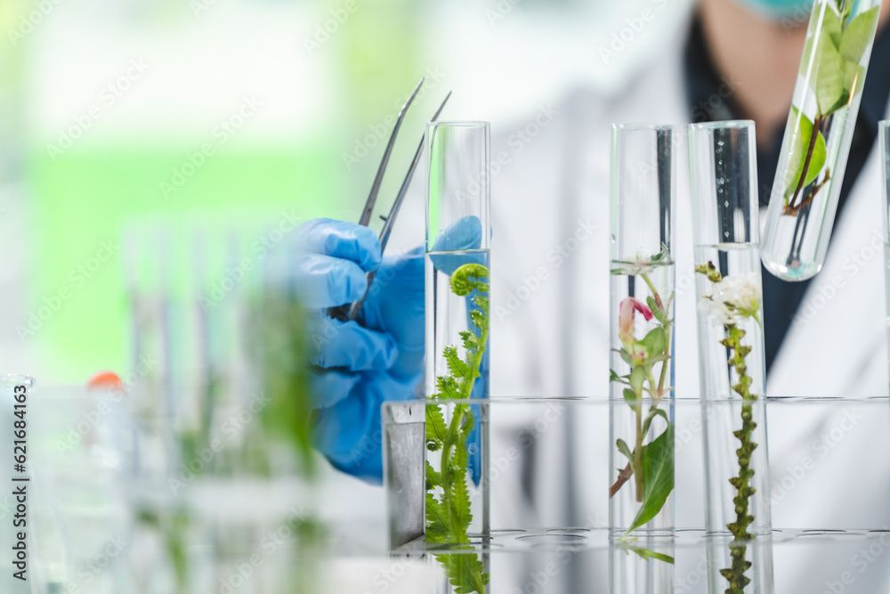
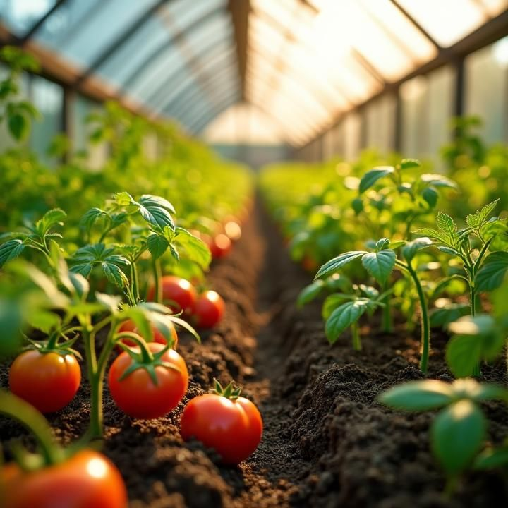
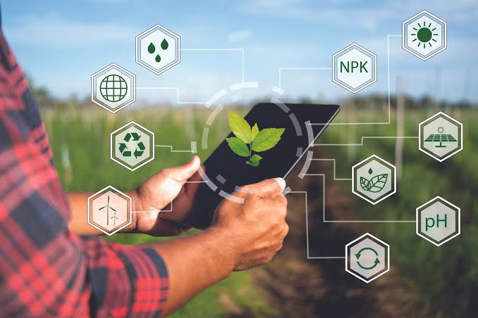

Innovation, sustainability, and trust — the pillars that make Zencor the partner of choice for farmers worldwide.

We prioritize nature by creating eco-safe products that help protect crops while preserving biodiversity and soil health.

Our products are engineered to boost crop growth and maximize yield through nutrient-rich, balanced formulations.
We believe in empowering farmers through on-field guidance, training, and sustainable farming practices that improve productivity.

We invest in research to bring forward new technologies that ensure efficiency and environmental protection in every product we make.
At Zencor, sustainability is more than a goal — it’s a commitment to a greener, more resilient future for agriculture.